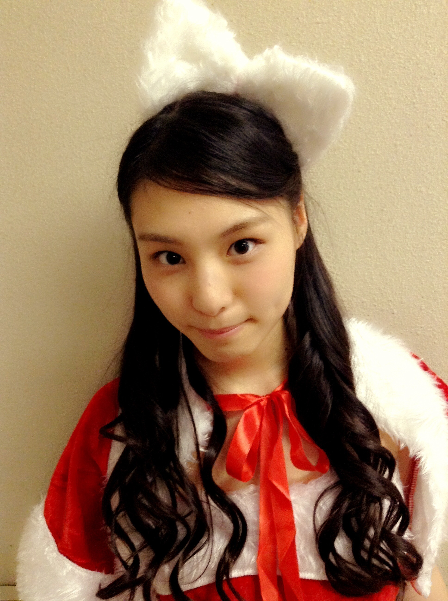
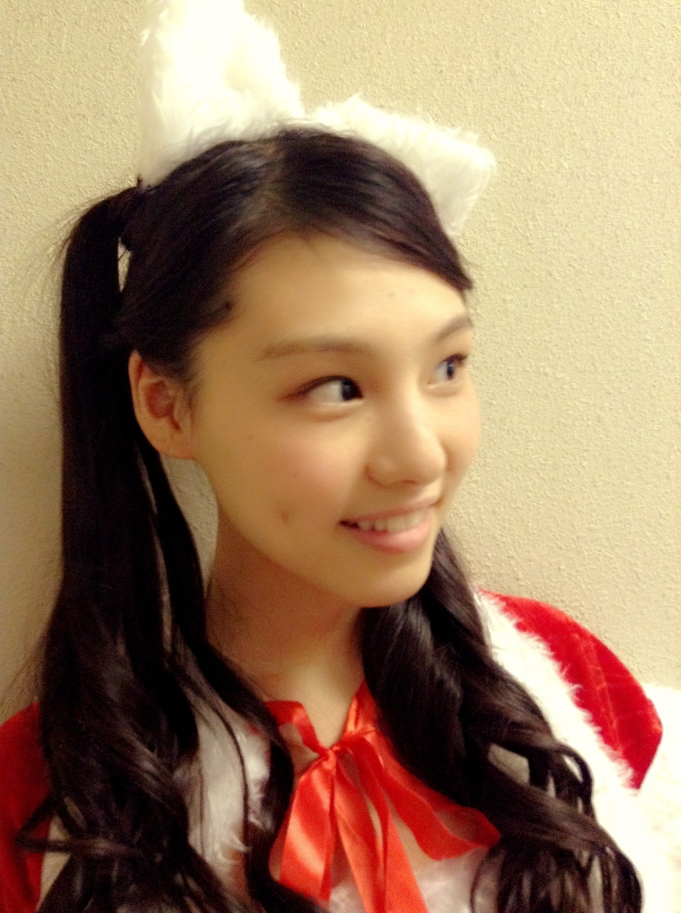
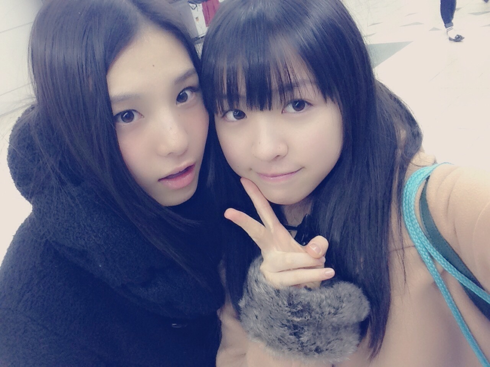
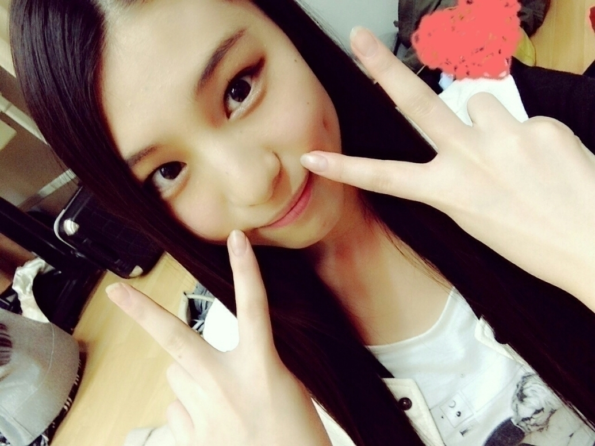
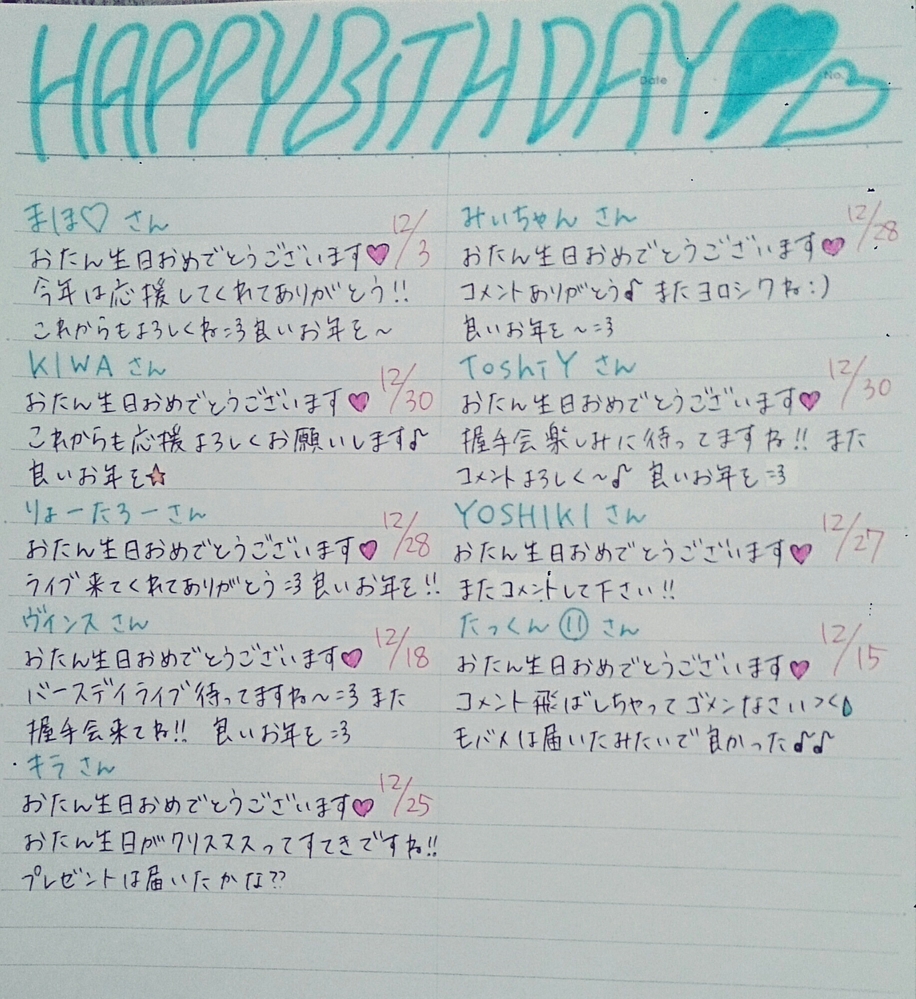
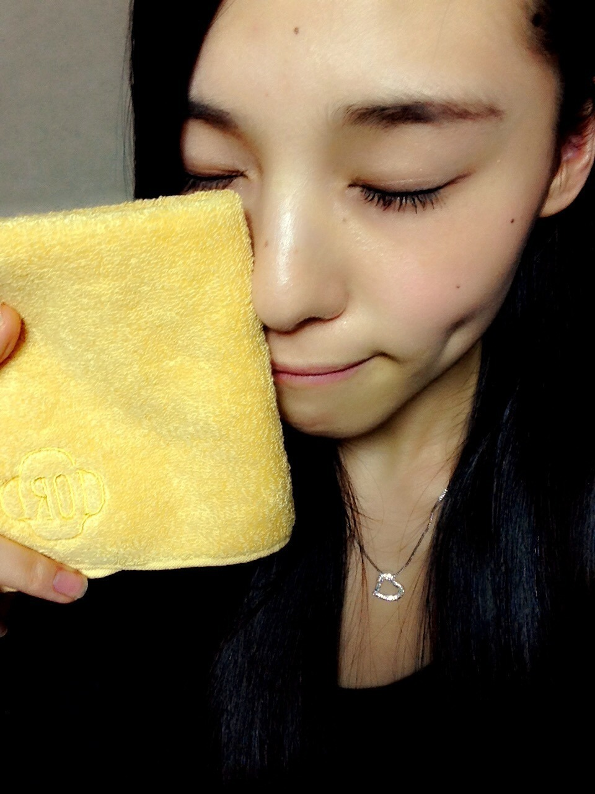

| 2014/12 27 Sat | (*いおり_(．．*)vol.19) |
みなさんこんばんはー！
高校2年生17歳
さがらいおりです！

名古屋握手会の 2 部のときの髪型
高めの巻きツイン
この写真
ひなこに撮ってもらったの！
横からだとこんな感じ

来てくれた方ありがとうございました♡
いおりサンタだよ♡
1 部は巻きおろし
好評でよかったです(∩´∀`∩)
色々お話できて楽しかった♪♪
握手会だいぶ慣れてきた気がしてます！
毎回楽しいんです：）
この前みりりんぬと
渋谷にお買い物行ってきました♪♪

みりりんぬと 2 人で遊ぶの
楽しくて、、楽しい(。-∀-)♡
お洋服見に行ったんだけど
決められなくて
結局香水だけ買って帰りました( / _ ; )
お洋服はママがいないと
いまいち分からない、、
この前純奈に
「次のブログいおりとの写真載せるね」って言われたから
昨日の純奈のブログ
ほんの少しだけ楽しみに読んでたら
質問返しの最後に
いおりとの写真があって
ほんの少しだけ嬉しかった( ¯﹀¯ )♡

純奈ちゃんの手
~いおり庵~
 いおりんってラジオ聞いたりする？
いおりんってラジオ聞いたりする？
聞くよー！
ウーマンさんと岡村さんの
オールナイトニッポンは
最近よく聞いてる！
あと、山里さんのジャンクも
たまに聞いてる！！
おすすめあったら教えてね～
お笑いライブで単独か芸人さんが何組かいる方だったらどっちが好き？
DVDは単独ツアーのものを
買ったりするけど、
見るのはどっちも好き♡
いおりは柔軟剤の香りと香水だったら、どっちが好きですか～？
んー、いおりはねー、
香水かな～
でも、苦手な匂いもあるし、
柔軟剤の香りも好きだし、
分かんないっ(っ `-´ c)‼
今年を漢字一文字で表すと？
えーなんだろー、、
華
かな～～～？？？？？？
理由は、
どう説明したらいいか
いまいちまとまらないけど、、
お誕生日の方にメッセージ(´,,•ω•,,)♡

このハンカチお誕生日に
お友達にもらったの♡

IORIって刺繍入ってるの：）
これ持ってる日は
気分が上がります(´,,•ω•,,)♡
今年は色々なことが
あった 1 年でした！！
来年は今年以上にもっともっと
いい年にできるように頑張ります♪♪
今年はたくさんの応援ありがとうございました♡
来年も応援よろしくお願いします♡
それでは良いお年を～
あ！明日の握手会
楽しみに待ってます♪♪
遊びに来てくれる方は
遅刻しないようにね(。-∀-)
i o r i .

コメント(446)
2014/12/27 19:42